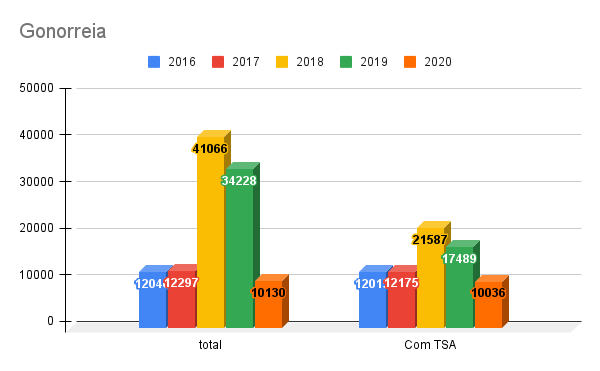
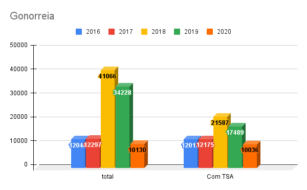

Identificação do problema
Quando estavamos em nossas pesquisas e buscas de problemas que poderiamos solucionar nos deparamos com vários estudos sobre rémedios e sobre alguns problemas que vemos enfrentando pelo mal uso dos mesmos. Problemas como:
- Dependência
- Resistência a tratamento (tanto do humano quanto do vírus)
Em um desses estudos descobrimos que 50% dos antibióticos prescritos no mundo não são necessários. E foi aí que pensamos que poderíamos criar um sistema, nesse caso um site, onde os médicos poderiam cadastrar as receitas e os medicamentos prescritos para os pacientes. E os pacientes poderiam consultar a dosagem que foi receitada pelos médicos.


 
